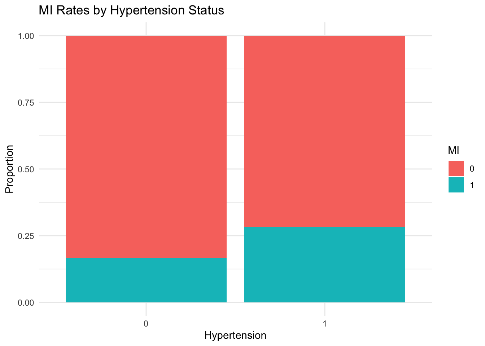
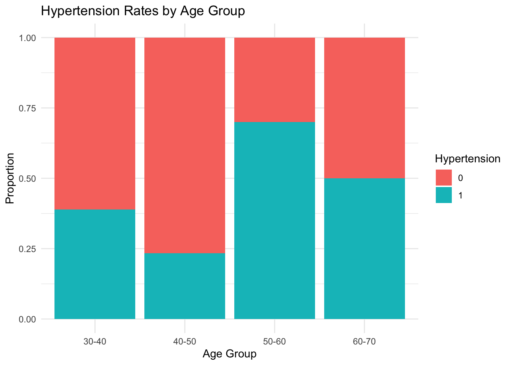

checking the data that we have requires us to take a peek of the data generated.
summary(cardiac_data)
patient_id age_group sex bmi_category
Min. : 1.00 Length:100 Length:100 Length:100
1st Qu.: 25.75 Class :character Class :character Class :character
Median : 50.50 Mode :character Mode :character Mode :character
Mean : 50.50
3rd Qu.: 75.25
Max. :100.00
cholesterol diabetes smoking hypertension mi
Min. :169.0 Min. :0.00 Min. :0.00 Min. :0.00 Min. :0.00
1st Qu.:189.8 1st Qu.:0.00 1st Qu.:0.00 1st Qu.:0.00 1st Qu.:0.00
Median :205.0 Median :0.00 Median :0.00 Median :0.00 Median :0.00
Mean :210.5 Mean :0.23 Mean :0.17 Mean :0.46 Mean :0.22
3rd Qu.:226.2 3rd Qu.:0.00 3rd Qu.:0.00 3rd Qu.:1.00 3rd Qu.:0.00
Max. :307.0 Max. :1.00 Max. :1.00 Max. :1.00 Max. :1.00
We use the table function to check distributions. The distributions show us how many participants are in each category.
Pearson's Chi-squared test with Yates' continuity correction
data: cardiac_data$hypertension and cardiac_data$mi
X-squared = 1.3289, df = 1, p-value = 0.249
# MI rates by hypertension statusggplot(cardiac_data, aes(x =factor(hypertension), fill =factor(mi))) +geom_bar(position ="fill") +labs(title ="MI Rates by Hypertension Status",x ="Hypertension",y ="Proportion",fill ="MI") +theme_minimal()

# Risk factors by age groupggplot(cardiac_data, aes(x = age_group, fill =factor(hypertension))) +geom_bar(position ="fill") +labs(title ="Hypertension Rates by Age Group",x ="Age Group",y ="Proportion",fill ="Hypertension") +theme_minimal()

lets try to test the hypothesis that says that there is no relationship between hypertension and mi. we carry out a logistic regression since our outcome is a binary variable.
# Simple logistic regression using generalised linear modelsmodel <-glm(mi ~ hypertension + age_group + sex + bmi_category + diabetes + smoking,family =binomial(link ="logit"),data = cardiac_data)# Print model summarysummary(model)
Call:
glm(formula = mi ~ hypertension + age_group + sex + bmi_category +
diabetes + smoking, family = binomial(link = "logit"), data = cardiac_data)
Coefficients:
Estimate Std. Error z value Pr(>|z|)
(Intercept) -4.2709 1.2309 -3.470 0.000521 ***
hypertension 0.6986 0.5955 1.173 0.240738
age_group40-50 1.4806 1.0111 1.464 0.143106
age_group50-60 1.2250 0.9917 1.235 0.216748
age_group60-70 1.8467 1.0160 1.818 0.069132 .
sexMale 0.9154 0.5599 1.635 0.102078
bmi_categoryObese 0.9616 0.7810 1.231 0.218263
bmi_categoryOverweight 0.3512 0.7353 0.478 0.632938
diabetes 0.7378 0.6086 1.212 0.225428
smoking 1.1524 0.7434 1.550 0.121080
---
Signif. codes: 0 '***' 0.001 '**' 0.01 '*' 0.05 '.' 0.1 ' ' 1
(Dispersion parameter for binomial family taken to be 1)
Null deviance: 105.382 on 99 degrees of freedom
Residual deviance: 90.223 on 90 degrees of freedom
AIC: 110.22
Number of Fisher Scoring iterations: 5
From the above, we see that there is a marginally significant relationship between being hypertensive and developing MI. Individuals with hypertension have higher odds of MI (p = 0.0588, marginally significant)keeping other factors constant.